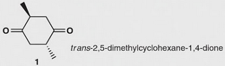

Chirality
Pasteur's Discovery of Enantiomers
Little was done after Biot’s discovery of optical activity until 1848, when Louis Pasteur began work on a study of crystalline tartaric acid salts derived from wine. On crystallizing a concentrated solution of sodium ammonium tartrate below 28 °C, Pasteur made the surprising observation that two distinct kinds of crystals precipitated. Furthermore, the two kinds of crystals were nonsuper imposable mirror images and were related in the same way that a right hand is related to a left hand. Working carefully with tweezers, Pasteur was able to separate the crystals into two piles, one of “right-handed” crystals and one of “left-handed” crystals, like those shown in Figure 5.6. Although the original sample, a 50;50 mixture of right and left, was optically inactive, solutions of the crystals from each of the sorted piles were optically active and their specific rotations were equal in amount but opposite in sign.

Pasteur was far ahead of his time. Although the structural theory of Kekulé had not yet been proposed, Pasteur explained his results by speaking of the molecules themselves, saying, “There is no doubt that [in the dextro tartaric acid] there exists an asymmetric arrangement having a nonsuperimposable image. It is no less certain that the atoms of the levo acid have precisely the inverse asymmetric arrangement.” Pasteur’s vision was extraordinary, for it was not until 25 years later that his ideas regarding the asymmetric carbon atom were confirmed. Today, we would describe Pasteur’s work by saying that he had discovered enantiomers. Enantiomers, also called optical isomers, have identical physical properties, such as melting point and boiling point, but differ in the direction in which their solutions rotate plane-polarized light.
A mirror image is the reflection of an object in a mirror. When you look in a mirror, you see a reflection, or mirror image, of yourself. Now suppose your mirror image became a three-dimensional object. You and your mirror image are not superposable if details are included. For example, if you have a ring on the little finger of your right hand, your mirror image has the ring on the little finger of its left hand. If you part your hair on your right side, it will be parted on the left side in your refl ection. You and your reflection are different objects. You cannot exactly superpose one on the other.
Objects that are not superposable on their mirror images are said to be chiral (pronounced ki-ral, to rhyme with spiral; from the Greek: cheir, hand). That is, they show handedness. Chirality is encountered in three-dimensional objects of all sorts. Your left hand is chiral and so is your right hand (they are approximately mirror images of each other). A spiral binding on a notebook is chiral. A machine screw with a right-handed thread is chiral. A ship’s propeller is chiral. As you examine objects around you, you will undoubtedly conclude that the vast majority of them are chiral as well.
An object or molecule will be achiral if it has one or more of certain elements of symmetry. The most common such elements in organic compounds are the plane and center of symmetry. As we shall see, any object or molecule with either of these symmetry elements is achiral and can be superposed on its mirror image. A plane of symmetry is an imaginary plane passing through an object or molecule dividing it such that one half is the reflection of the other half. The cube shown in Figure 3.1 has several planes of symmetry. Both the beaker and the compound bromochloromethane have a single plane of symmetry. A center of symmetry is a point so situated that identical components of the object or molecule are located equidistant and on opposite sides from the point along any axis passing through that point. The cube shown in Figure 1 has a center of symmetry as does the cyclobutane. Because it has a center of symmetry, the cyclobutane is identical to its mirror image, and is achiral.
Objects or molecules that lack both of these symmetry elements are chiral.
L'1-bromo-1-chloroetaneo non ha nè piano nè centro di simmetria, quindi è chirale. A model of 1-bromo-1-chloroethane can be turned and rotated in any direction in space, but as long as bonds are not broken and rearranged, only two of the four groups bonded to the central carbon of one molecule can be made to coincide with those of its mirror image. Because 1-bromo-1-chloroethane and its mirror image are nonsuperposable, they are chiral objects known as Enantiomers: Stereoisomers that are nonsuperposable mirror images of each other; while chirality is the phenomenon that imparts to certain objects the property of not being superposable on their mirro image.
A Racemic mixture designates the 1:1 mixture of the two enantiomers of a chiral substance and should not be applied to any other stereoisomeric mixture, chiral or achiral. It does not echibit optical activity. However, the term is in fact often applied, entirely incorrectly, to other mixtures of stereoisomers.
Symmetry and chirality
Any molecule which contains an improper axis of rotation (Sn axis) will be achiral. The reason for this is that an improper axis of rotation is the product of a proper rotation (Cn) followed by a reflection (σ). La presenza della sola simmetria rotazionale (del solo asse Cn) non è sufficiente per conferire alla molecola achiralità:
Molecole appartenenti al gruppo Cnh possiedono implicitamente un asse Sn poichè hanno simmultaneamente un Ch ed un σh. Un centro di inversione i, è lo stesso di un S2 poichè le due operazioni portano allo stesso risultato. Inoltre un piano di simmetria è lo stesso di S1 (rotaazione di 360° seguita da riflessione). Quindi una molecola che possiede un piano di simmetria o un centro di inversione è achirale come detto in precedenza.
Ad esempio la molecola trans-2,5-dimeticloesano-1,4-dione, non possiede un piano di simmetria ma è achirale perchè ha un asse S2.
Chiralità condizione necessaria e sufficiente - Only those molecules are chiral which do not have an alternating axis of symmetry Sn (i.e. absence of a rotation/reflection axis). The chiral molecules can, however, have an axis of rotation (Cn).